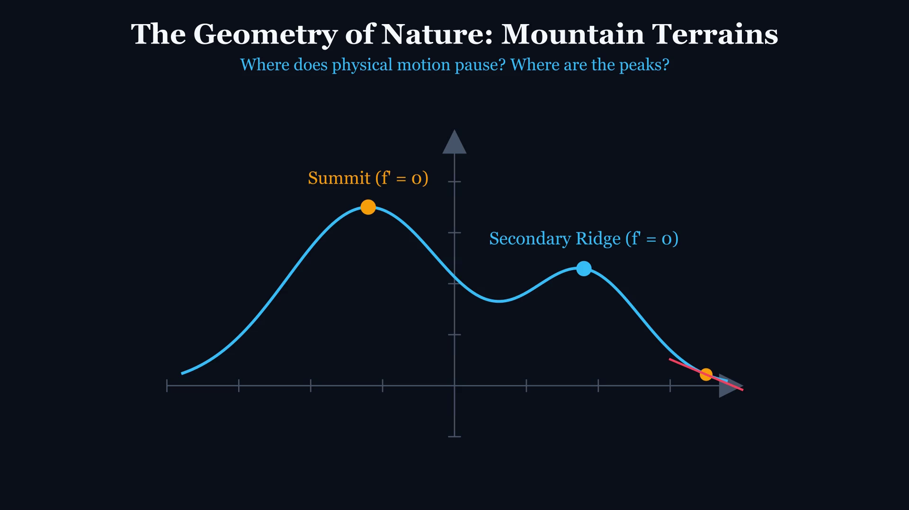
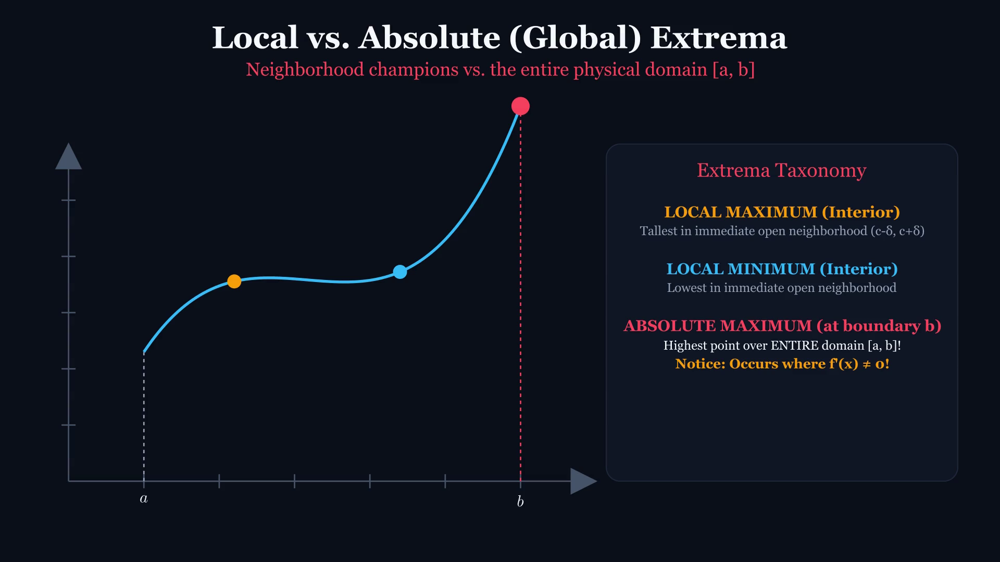
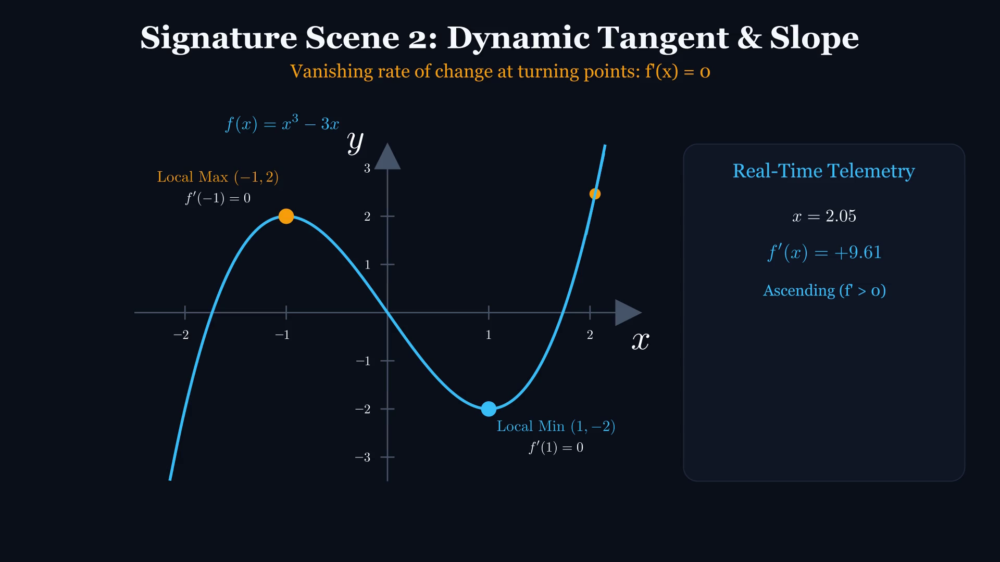
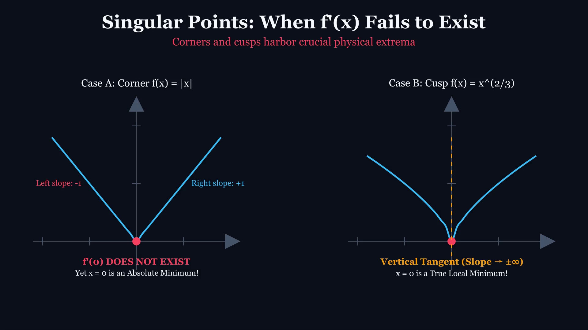
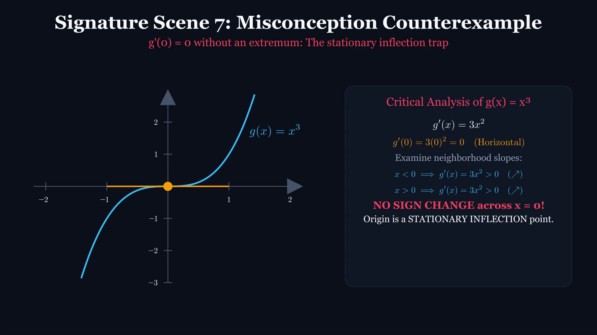
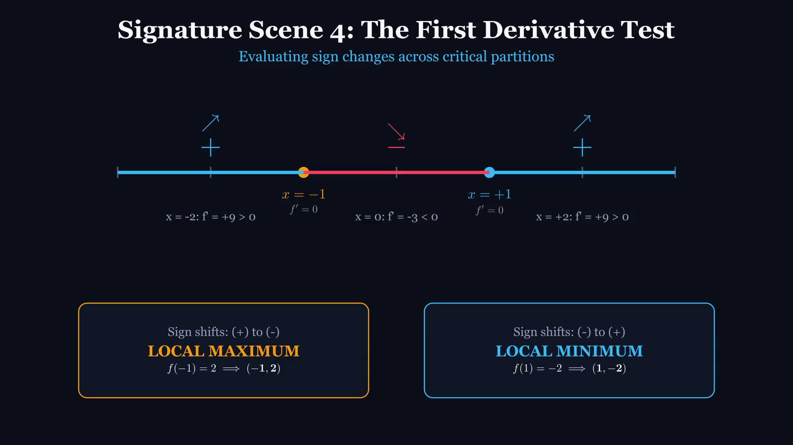

Maxima & Minima
Dynamic Motion, Extrema Tests & Engineering Optimization
A mathematical motion lecture inspired by 3Blue1Brown, featuring genuine ManimCE transformations, continuous tangent slope telemetry, concavity bending, and real-time Apple Pencil derivation workspaces.
Lecture Trajectory
01. Visual Motion & Critical Points
Terrain exploration hook, moving tangent vectors, instantaneous velocity zeros, and singularities (corners & cusps).
02. First Derivative Test & Sign Charts
Factoring transformations, number line interval sampling, and direction transitions across critical thresholds.
03. Second Derivative & Concavity
Curvature rate f''(x), concavity bowls (cap vs. cup), and the stationary inflection terrace counterexample g(x) = x³.
04. Closed-Interval Optimization
Extreme Value Theorem on [a, b], candidate matrix evaluation, and circuit Maximum Power Transfer Theorem.
Terrain Exploration: Peaks & Valleys
PEDAGOGICAL HOOK
Where do true summits occur?
Notice the moving elevation probe. On the ascent, slope is positive. On the descent, slope is negative. At the exact apex, vertical motion freezes.
Tangent Equilibrium & Slope Incline

APPLE PENCIL SCRATCHPAD
Live Student Derivation Prompts:
- âœï¸ Draw tangent vectors at x = -2.5 (ascent), x = -1.2 (crest), and x = 0 (descent).
- âœï¸ Write the instantaneous slope inequality: f'(x) > 0 vs. f'(x) = 0 vs. f'(x) < 0.
- âœï¸ Circle the Local Maximum vs. the Global Mountain Peak.
Local Extrema vs. Absolute Boundaries
TOPOLOGICAL DISTINCTION
Neighborhood vs. Global Supremum
• Local: Winning against immediate neighbors in (c - δ, c + δ).
• Absolute: The highest value across the entire domain D.
The Neighborhood Test & Boundary Caps

APPLE PENCIL SCRATCHPAD
Formalizing the Neighborhood:
- âœï¸ Draw the open interval (c - δ, c + δ) around x = câ‚.
- âœï¸ Show why x = b cannot contain a two-sided ball inside domain [a, b].
- âœï¸ Compare numerical elevations: Local Max (elevation 2.0) vs Global Max at x = b (elevation 3.5).
The Cubic Function: f(x) = x³ - 3x
MATHEMATICAL MODEL
Kinetic Trajectory Tracking
The point moves continuously across the cubic manifold. Observe how the curve transitions from climbing to falling to climbing again.
Dynamic Tangent Line & Slope Telemetry
DERIVATIVE VELOCITY
Real-Time Slope Readout
As the point glides along the curve, the tangent vector rotates dynamically:
• Cyan: m > 0 (climbing)
• Amber: m = 0 (horizontal freeze)
• Coral: m < 0 (descending)
Derivative Derivation & Instantaneous Velocity

APPLE PENCIL SCRATCHPAD
Step-by-Step Power Rule:
- âœï¸ Compute f'(x) = d/dx [x³ - 3x] = 3x² - 3.
- âœï¸ Evaluate f'(0) = -3: Why is descent steepest at the y-intercept?
- âœï¸ Set f'(x) = 0: Solve 3x² - 3 = 0 => x² = 1 => x = ±1.
When Derivatives Fail: Corners & Cusps
NON-DIFFERENTIABLE EXTREMA
Corners (|x|) and Cusps (x^(2/3))
Calculus is not just about smooth derivatives. In engineering impact and fracture mechanics, corners and cusps form extreme stress concentrations.
Difference Quotient Singularity Proof

APPLE PENCIL SCRATCHPAD
Rigorous Singularity Limits:
- âœï¸ Evaluate lim (h→0â») |h|/h = -1 vs. lim (h→0âº) |h|/h = +1.
- âœï¸ For f(x) = x^(2/3), derive f'(x) = 2 / (3 * x^(1/3)). Show f'(0) division by zero.
- âœï¸ State clearly why (0, 0) is a valid, indisputable Global Minimum.
The Critical Trap: g(x) = x³ Inflection Terrace
THE CRITICAL POINT TRAP
Zero Derivative != Automatic Extremum
At x = 0, the tangent line of g(x) = x³ becomes completely horizontal (g'(0) = 0). Yet the curve never turns around! It pauses and keeps ascending.
Logical Implication: Necessary vs. Sufficient

APPLE PENCIL SCRATCHPAD
Logical Directionality:
- âœï¸ Write Fermat's Theorem: Local Extremum at c (diff'able) ⟹ f'(c) = 0.
- âœï¸ Strike through the false converse: f'(c) = 0 ⇠Local Extremum.
- âœï¸ Analyze g'(x) = 3x²: For x < 0, 3x² > 0. For x > 0, 3x² > 0. No sign change!
Algebraic Morphing: Factoring the Derivative
CONTINUOUS MORPH
TransformMatchingTex In Action
Watch LaTeX equations reshape naturally from polynomial difference into linear factors, then drop coordinate dashed lines directly onto the curve's x-axis.
First Derivative Test: Dynamic Sign Chart
INTERVAL DYNAMICS
Sign Alternation & Trapped Extrema
• (-∞, -1): f'(x) > 0 ↗ Curve climbs
• (-1, 1): f'(x) < 0 ↘ Curve descends
• (1, ∞): f'(x) > 0 ↗ Curve climbs
Constructing the Derivative Sign Table

APPLE PENCIL SCRATCHPAD
Factored Test Matrix 3(x-1)(x+1):
- âœï¸ Draw columns: x < -1 | x = -1 | -1 < x < 1 | x = 1 | x > 1.
- âœï¸ Test x = -2: 3(-3)(-1) = +9 > 0 (↗).
- âœï¸ Test x = 0: 3(-1)(+1) = -3 < 0 (↘).
- âœï¸ Test x = +2: 3(+1)(+3) = +9 > 0 (↗).
Exact Extrema Coordinates: (-1, 2) & (1, -2)
COORDINATE VERIFICATION
Evaluating the Original Function
• f(-1) = (-1)³ - 3(-1) = -1 + 3 = +2
⟹ Local Maximum: (-1, 2)
• f(1) = (1)³ - 3(1) = 1 - 3 = -2
⟹ Local Minimum: (1, -2)
Second Derivative Test & Concavity Bending
CURVATURE RATE
f''(x) = 6x
• x = -1: f''(-1) = -6 < 0 (Concave Down ∩)
Slopes are decreasing ⟹ Traps a LOCAL MAX.
• x = 1: f''(1) = +6 > 0 (Concave Up ∪)
Slopes are increasing ⟹ Holds a LOCAL MIN.
Extrema Decision Matrix: 1st vs. 2nd Test
FIRST DERIVATIVE TEST
Scope: Universal. Handles smooth turning points AND sharp singularities (corners/cusps).
Mechanism: Tracks sign flip of f'(x) across x = c.
Outcomes:
- (+) to (-) ⟹ Local Maximum
- (-) to (+) ⟹ Local Minimum
- No change ⟹ Neither (Inflection Terrace)
Verdict: 100% dependable; always available.
SECOND DERIVATIVE TEST
Scope: Restricted. Requires f'(c) = 0 and f''(c) to exist.
Mechanism: Computes instantaneous curvature f''(c) at a single point.
Outcomes:
- f''(c) < 0 ⟹ Concave Down ⟹ Local Max
- f''(c) > 0 ⟹ Concave Up ⟹ Local Min
- f''(c) = 0 ⟹ INCONCLUSIVE!
Verdict: Fast when derivatives are simple; fragile.
Closed Interval Method & Candidate Matrix
CANDIDATE EVALUATION
Domain: [-0.5, 2.5]
• Left Endpoint: f(-0.5) = 1.375
• Interior Critical: f(1.0) = -2.000 ⟹ ABS MIN
• Right Endpoint: f(2.5) = 8.125 ⟹ ABS MAX
Maximum Power Transfer Theorem
CIRCUIT OPTIMIZATION
P(R_L) = V_th² * R_L / (R_th + R_L)²
Applying the Quotient Rule to dP/dR_L = 0 yields:
(R_th + R_L)² - 2*R_L*(R_th + R_L) = 0
⟹ R_Load = R_Source
Practice Challenge & Verification Key
ENGINEERING CHALLENGE
Analyze the structural displacement curve:
- Find f'(x) and factor completely.
- Find all critical numbers within [-2, 4].
- Use 2nd Derivative Test to classify local extrema.
- Evaluate the EVT candidate table.
- Determine the Global Extrema coordinates.
STEP-BY-STEP SOLUTION KEY
1. Derivative: f'(x) = 6x² - 6x - 12 = 6(x - 2)(x + 1)
2. Criticals: x = -1 & x = 2 (both in domain)
3. Concavity: f''(x) = 12x - 6
• f''(-1) = -18 < 0 ⟹ Local Max at (-1, 12)
• f''(2) = +18 > 0 ⟹ Local Min at (2, -15)
4. Candidate Table:
f(-2) = 1 | f(-1) = 12 | f(2) = -15 | f(4) = 37
🆠Global Max: (4, 37) [Endpoint]
📉 Global Min: (2, -15) [Interior Critical]